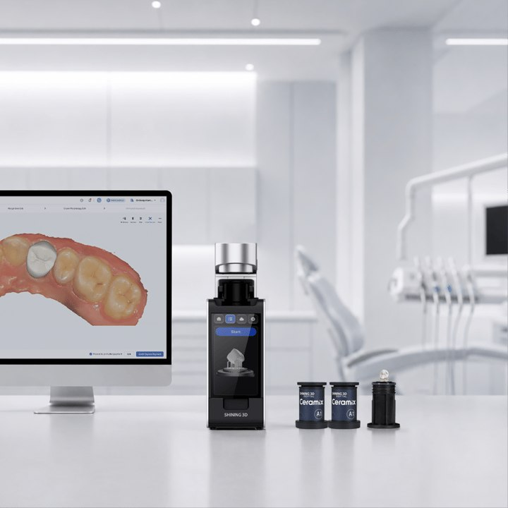

SHINING 3D
SHINING 3D研究聲明：本網站根據 2026-11-22 深度研究報告整理。兩家品牌相同篇幅與評估標準，不預設推薦或冠軍。原廠規格、同儕審查研究、獨立評測和價格傳聞均分開標示。官方未公開價格，不會補造數字。
RESEARCH PROVENANCE · 研究依據
本網站依據「SHINING 3D vs iTero 深度研究報告」製作。
2026 年 11 月 22 日完成研究，涵蓋四款主力機型、三種治療情境、台灣與全球價格、軟體與製造生態系、學術證據及限制。本站為該研究的圖文視覺化整理；完整原文與引用均可追溯。
THE BIG PICTURE
兩種優勢，沒有全局贏家。
最大差異，不只是六鏡頭或 IPG，而是把數據採集延伸到不同的臨床成果。
🦷
單顆／局部修復
常規口掃能力與後續 CAD / Lab 工作流程最重要。SHINING 的 SHINING Flow + Ceramix-Nano 提供同廠列印閉環；iTero 更重視數位掃描、病例視覺化與連接設計系統。
重點是 Margin、CAD 與最終材料，而非旗艦標籤。
🧬
全口重建／All-on-X
Elite 的 IPG + Coded MUA 是差異化技術；Lumina 的大視野取像與全口掃描表現亦有研究支持。無牙顎活動義齒與全口植牙固定贋復必須分開分析。
植體位置精度不等於一日完成假牙。
✨
Invisalign 治療
iTero × Align 的 ClinCheck、矯正模擬、進度評估及 Vivera 是難以單靠通用口掃機複製的工作流程。SHINING 的優點則在開放掃描資料與一般矯正模型製作。
關鍵是帳戶、病例與服務方案授權。
THE FOUR MODELS
四款主力機型，對稱比較。
Elf／Elite 與 Element 5D Plus／Lumina。Elite Wireless 只是 Elite 同系列變體；Lumina Pro 需獨立核對台灣上市資格。
SHINING 3D SHINING 3D
SHINING 3DAoralscan Elite
一般 IOS 結合 Intraoral Photogrammetry，將多植體定位整合到同一設備。
- 強項：All-on-X 多植體位置擷取、全口軟組織掃描；可串接面掃、Jaw Motion、設計與技工製作。
- 限制：要有相容 MUA、Scanbody 及後端技工工作流程；IPG 原廠宣稱值不能直接視為臨床被動密合誤差。
- 變體：Elite Wireless 提供無線機型，價格及電池維護另計。[2]
Element 5D Plus
上一代高階平台；支援 NIRI（依版本）、Invisalign Outcome Simulator Pro 與原生矯正工作流程。
- 強項：台灣 iTero 官方頁明列 Outcome Simulator Pro 可於 5D Plus Cart／Mobile 搭配有效服務方案使用。
- 限制：小於 Lumina 的取像視野；購買時需辨別 5D Plus 與 Lite／其他配置。
- 定位：重視 Invisalign 模擬與成熟平台的方案。[6]
 ITERO / ALIGN
ITERO / ALIGNiTero Lumina
六攝影鏡頭的 Multi-Direct Capture，擴大視野並支援較複雜的修復與無牙顎掃描。
- 強項：原廠宣稱相對 Element 5D 擴大三倍視野；臨床價值還包括 Align 牙科資料與 Invisalign 工作流程。
- 限制：標準 Lumina 無 NIRI；Lumina Pro 在台灣原廠頁仍標示尚未核准，不能把 Pro 功能併入報價。
- 定位：大型、跨療程的 Align 生態系入口。[5]
PRICE TRANSPARENCY
官方未公開定價，不能假裝有。
下表是不同來源、不同條件的公開資訊，不能將美元售價直接換算後當成台灣成交價。
| 型號 | 原廠公開 MSRP | 海外市場參考價 | 台灣目前取得的價格 |
|---|---|---|---|
| SHINING 3D Elf | 未公開 | 約 US$11,999iDD 2026 評測列價，非原廠 MSRP [3] | 約 NT$45 萬先前提供之台灣一般現場口頭報價；不同於本頁新增的展場組合活動 |
| SHINING 3D Elite | 未公開 | 約 US$20,000iDD 2026 評測列價；Wireless 約 US$23,999 [3] | 約 NT$70–80 萬使用者提供之台灣現場口頭報價 |
| iTero Element 5D Plus | 未公開 | US$29,000美國經銷商公開標價；版本、配備需按商品頁核對 [13] | 未取得可靠公開報價 |
| iTero Lumina | 未公開 | US$39,000 特價／US$50,000 原列價美國經銷商公開標價；非原廠 MSRP [13] | 約 NT$70–80 萬使用者提供之台灣現場口頭報價 |
2026-11-22 · SHINING EDGE 展場公開海報 · 活動促銷
Elf ＋ Ceramix-Nano 套組：VIP NT$650,000
公開海報列示：高階 Elf 口掃機＋100 盒瑞士 Saremco 膠囊樹脂，贈 Ceramix-Nano 一台；海報另列 Aesthetics Kit 一組之活動項目。這是組合活動價，不是 Elf 單機報價、不是 Ceramix-Nano 單價，也不是官方 MSRP。
海報另稱「AI Cloud Design 90 秒完成單冠設計」與「10 分鐘修復體列印／固化」；均為展場宣傳及特定流程條件，不代表從掃描、設計、列印、清洗、後固化到臨床黏著的總耗時。
資料來源：2026/11/22 SHINING EDGE Taipei 現場公開展示海報（參展者實拍）。限時 VIP 資格、套餐配件、材料適應症、保固與活動截止日尚未取得完整正式條款；不得直接與不同機況、不同配件的單機售價比較。本段是原始深度研究完成後加入的現場補充，未修改研究原文。
THREE CLINICAL DECISIONS
以治療需求判斷價值。
每個情境都拆成 SHINING 3D 與 iTero 兩欄，明確區分口掃機單機能力與完整配套後才具備的功能。
SCENARIO 01
單顆／局部固定修復、短跨植牙贋復
牙冠、牙橋、Overlay、單顆植牙及短跨植體橋。重要指標是 Margin visibility、Bite、Scanbody、CAD 設計與最終修復品質；單純更高鏡頭數不會消除牙齦下邊緣遮蔽問題。[10]
SHINING 3D：掃描＋設計＋列印
Elf／Elite 一般 IOS → SHINING Flow → AI Design → Ceramix-Nano
Elf / Elite→AI Design→Nano→固化
- 同世代常規 IOS 核心；若只做一般修復，IPG 並非必要條件。
- 選購雲端設計與 Ceramix-Nano 後，能建構單冠等椅旁 3D 列印工作流。
- 原廠提出約 30 分鐘 Scan-to-Cementation 示範，應視為特定流程的廠商宣稱，不是普遍臨床保證。
限制：LumiCera 是高填充樹脂，不是燒結氧化鋯；長期耐用性、適應症及台灣核准與費用需要獨立看。[4]
SHINING 3D
Elf／Elite → Dental Cloud → Face / Jaw Motion（另購）→ Denture Design → 製作
- 新世代掃描核心改善軟組織數位擷取；可利用 MetiSmile、設計服務與相容列印機延伸流程。
- 適合希望把掃描、設計與製作逐步整合的工作方式。
限制：Face Scan、Jaw Motion、全口義齒 CAD 和列印設備不是只買 Elf／Elite 就免費解鎖。[1]
iTero
Lumina MDC → 數位模型 → 支援的技工所工作流程
- Lumina 相對舊代更大的掃描視野、較深的取像距離，對深顎、大片無牙空間是明確設計方向。
- 可將掃描結果交給適用數位技工流程；需檢查實際輸出與軟體相容。
限制：沒有因為六鏡頭就自帶功能性邊緣印模、完整全口義齒設計或製造能力。[5]
SCENARIO 02B
固定式全口植牙：IPG 與六鏡頭是不同解法
核心問題是多植體位置的完整牙弓量測與被動密合，和全口活動義齒軟組織功能性印模不同。必須看同條件研究，不能跨研究直接比較 μm 數字。[12]
SHINING 3D：Elite IPG 路線
Elite IPG→Coded MUA→CAD→Lab / Print
- IPG 搭配相容 MUA 的 Coded Scanbody，用於取得全口植體相對位置。
- 可額外導入 MetiSmile-MR、Jaw Motion、AccuFab 或技工所，完成更多環節。
- 優勢在自家設備可串接較完整的全口植體製作鏈。
iTero：Lumina IOS 路線
Lumina IOS→Scanbody→Lab / CAD
- 不具 Elite 那種原生 Coded-Scanbody IPG 模式，但在特定六植體體外研究中達到接近 Elite IPG 的 Trueness。
- 可維持 iTero／Align 常規修復與數位病例平台，並交由合適技工所完成全口工作。
- 不宜將「無內建 IPG」直接推論成「任何全口病例都不準」。
限制：沒有專屬 IPG 的技術流程；術前規劃、咬合記錄、即刻負載條件及被動密合驗證仍需獨立完成。[12]
SCENARIO 03
隱形矯正：iTero 最大的優勢不在掃描鏡頭
Invisalign 是 Align 的完整療程生態系：初診模擬、ClinCheck 計畫、治療進度比對及術後維持都有獨立資料流程和帳戶條件。[6]
SHINING 3D：開放掃描與製作
Elf / Elite→STL / PLY→矯正設計 / 模型
- 可提供矯正用數位模型、第三方設計資料與 Retainer／模型製作流程。
- 優勢是開放格式、可選擇製作端工具，與 Invisalign 訂閱關係較低。
限制：不等同擁有原生 ClinCheck、Invisalign Progress Assessment 或官方 Vivera 工作流；第三方提交資格需另看 Align 政策。
iTero：Invisalign 原生閉環
iTero→模擬→ClinCheck→Progress→Vivera
- Outcome Simulator / Pro：治療前微笑模擬及患者溝通。
- ClinCheck、Smile Architect：矯正設計與矯正－贋復整合。
- Progress Assessment：依新掃描與既定 ClinCheck 計畫比較。
- Vivera：治療後維持器訂製流程。
UNLOCKED BY THE ECOSYSTEM
口掃機只是入口。
「滿配」後才看到真正差異。
Scanner alone 不等於所有下游能力已包含於購機報價；這是兩種完全不同的投資路線。
SHINING 3D SYSTEM
從掃描到實體製造
單冠與局部修復
Elf / Elite→SHINING Flow→AI Design→Ceramix-Nano
同一品牌把掃描、設計服務與列印串接。真正的價值不在 Elf 一支掃描頭，而在有條件導入椅旁製作的可能性。
All-on-X 與全口重建
Elite IPG→MUA→MetiSmile / CAD→AccuFab / Lab
IPG、面掃、Jaw Motion、設計與製造逐步擴充；每項能力均有額外設備、材料、相容性與人員訓練條件。
- 優勢：實體製造鏈整合較深，Lab 可依需求部分外包。
- 成本型態：硬體擴充＋設計 Credits＋列印耗材。
- 限制：各設備與材料在台供應、贋復適應症需分開查。
ALIGN / ITERO SYSTEM
從掃描到矯正療程
Invisalign 治療流程
iTero→Outcome Simulator→ClinCheck→Vivera
原生數位病歷、治療模擬、個案提交、牙齒移動規劃及維持器連成一條路徑，優勢是療程營運與醫病溝通。
修復與跨科工作流程
iTero Scan→Oral Health Suite→Design Suite / Lab
數位修復與影像呈現可延伸到 Restorative Workflow，部分功能依帳戶、軟體和服務合約開放。
- 優勢：Invisalign Doctor Site、ClinCheck、Progress Assessment 的平台整合。
- 成本型態：Service Plan＋一次性 Sleeves＋適用病例的矯正產品與服務。
- 限制：帳戶與平台綁定；單機價無法包含所有 Align 療程功能。

SHINING 3D / CERAMIX-NANO
Nano 的優勢值得比較，但材料要講清楚。
原廠提供 Ceramix-Nano 膠囊式 DLP 3D 列印流程，宣稱單冠列印約 8–11 分鐘、固化約 3 分鐘，完整特定情境約 30 分鐘由掃描到黏著。這些是廠商示範條件，不應直接推估日常診所平均製作時間。
LumiCera 為高填充樹脂（highly filled resin），不是 zirconia。 最新材料上市時間短，長期臨床證據與台灣永久修復適應症不能由海外 FDA 宣傳直接推論。[4]
查 Ceramix-Nano 官方材料與流程 ↗EVIDENCE BEFORE MARKETING
同一個技術問題，也可能出現不同結論。
避免挑一篇對品牌有利的研究，當作全面排名。以下分清楚研究方法、樣本及可外推程度。
PEER REVIEWED · SYSTEMATIC REVIEW
牙齦下 Margin 的限制
2025 系統性回顧指出齦下邊緣、視野與濕度控制仍影響數位印模。再大的 FOV 也不能讀出未暴露的邊緣。
查看研究方法與結論 [10] ↗PEER REVIEWED · IN VITRO
全口植體 IPG vs Lumina
比較體外研究中 EPG／Elite IPG／Lumina 各約 5／29／34 µm。這是特定模型的平均偏差，並非臨床所有病例的被動密合預測；Elite 與 Lumina 不能據此直接判定普遍勝負。
研究條件與測試機型 [12] ↗REVIEW · EDENTULOUS SCANNING
無牙顎仍是 IOS 挑戰
2025 無牙顎印模回顧顯示，掃描範圍、軟組織與演算法仍可左右準確性。全口活動假牙並非單靠新鏡頭就解決所有功能印模需求。
查看無牙顎回顧 [11] ↗TRACEABLE SOURCES
原始資料與引用。
來源依實證強度解讀：同儕審查研究用於臨床推論，官方規格用於確認功能，經銷商資料僅用於價格，評測只作質性參照。
01SHINING Flow：掃描、雲端設計、列印及數位牙科工作流程原廠／生態系功能
02Aoralscan Elite：IOS + IPG、Coded Scanbody 與規格原廠／產品規格
03Institute of Digital Dentistry：Elf 獨立實測與國際市場列價獨立評測／非官方 MSRP
04Ceramix-Nano：LumiCera 材料、膠囊列印及原廠流程宣稱原廠／材料與產品宣傳
05iTero Lumina：台灣官方功能、MDC、Lumina Pro 地區註腳原廠台灣／產品及區域限制
06iTero Element 5D Plus：Outcome Simulator Pro 適用型號及 Service Plan 註記原廠台灣／授權限制
07iTero Service Plans：更新、維修、雲端與服務權益原廠／售後條款
08iTero Accessories：一次性口掃保護套等耗材原廠／耗材
09SHINING3D Credits：進階設計服務付費流程原廠支援／軟體授權
10Accuracy of IOS for Subgingival Crown Margins：系統性回顧學術研究／牙冠邊緣
11Edentulous Arch Impression Accuracy：無牙顎掃描範疇回顧學術研究／全口活動假牙
12Full-Arch Implant Impression：EPG、Elite IPG、Lumina 體外比較學術研究／模型、非臨床療效
13Voxel Dental：iTero 5D Plus／Lumina 美國經銷商標價海外經銷商／非原廠 MSRP
14Elite IPG 訂單：全口植牙與相容 MUA 定位要求原廠支援／IPG 流程
15iTero × Invisalign：ClinCheck、Progress Assessment 原生整合原廠／療程生態系
16貝殼生技：Elf 台灣原廠代理產品規格與洽詢台灣代理商／非公開定價
17Full-Arch Stereophotogrammetry vs IOS：系統性回顧與統合分析學術研究／全口植體
18Align Digital Workflow：Smile Architect、iTero Design Suite 與修復連接原廠案例／非比較試驗